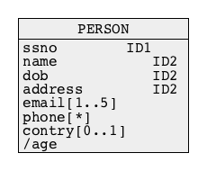

The Relational Model of Data
Outline
Basic Concepts
- Data model ? What is it ?
- A data model provides an abstract view of data that can be used for data definition, data manipulation, data retrieval, and data administration
- Accordingly to Wikipedia) a data model organises data elements and standardises how the data elements relate to one another
- Because a data model provides an abstract view it is also commonly called as a view of data
- In the past we talked about the following views of data:
Basic Concepts
- In 1970 Edgar Frank Codd from IBM Corporation defined a model of data based on a tabular view and called it as Relational Model of Data or simply Relational Model
- At the moment (early 2021) ~95% of all database systems is based on Relational Model of Data
- However, it is important to say that in the past and now, Relational Model of Data had and still has a few serious contenders like Object-Oriented Model, Object-Relational Model, XML Data Model, and recently JSON Data Model
Basic Concepts
- What view of data provides Relational Model of Data ?
- The model provide a tabular view of data
- A relational table consists of a header and theoretically an unlimited number of rows
- A header consists of a sequence of attribute names
- A row consists of a sequence of values of attributes
- A vertical sequence of attribute name followed by the attribute values is called a column
- A header is also called a relational schema
- A set of all values of an attribute is called a domain of an attribute
- A database is a set of relational tables
Basic Concepts
- A sample relational table:

Basic Concepts
- Why a relational table is called as a "relational" ?
- This is because of the following original E.F. Codd's definition of a relational table:
- Let A1, A2, ... An be the names of attributes
- Let dom(A1), dom(A2), ... dom(An) be the domains of the attributes, A1, A2, ... An, it means, the sets of values of each attribute A1, A2, ... An
- A relational table is defined as a subset of the Cartesian Product
dom(A1) x dom(A2) x … x dom(An)
- In mathematics a subset of the Cartesian Product is known as a relation
- This is why a relational table is called "relational"
- The original definition of a relational table is not completely correct because two tables with the different orders of columns contain the same information ...
- ... however two relations, that have a different order of domains are different
The Relational Model of Data
Outline
Relational Table
- A correct definition of relational tables is the following:
- Let A1, A2, ... An be the names of attributes
- Let dom(A1), dom(A2), ... dom(An) be the domains of attributes A1, A2, ... An, it means, the sets of values of each attribute A1, A2, ... An
- A row r is a full mapping r: {A1, A2, ...A n} -> dom(A1) U dom(A2) U ... dom(An) such that for all A in {A1, A2, ... An}, r(A) is in dom(A)
- A relational table is defined as a set of rows
- Now, an order of columns is immaterial, but ... a name "relational" is not well justified ;)
The Relational Model of Data
Outline
Principles of Relational Model
- A relational table that has no multivalued attributes and composite attributes is in the first normal form (1NF)
- For example, a relational table below is NOT in 1NF
- Sometimes we say, that such table is in 0NF or that it is a nested table
- Are there any higher normal forms like for example 2NF, 3NF, ... ?
- YES ! However, we shall not discuss this topic now !
- Is 0NF completely useless ?
- NO ! However, we shall not discuss this topic in this subject !

Principles of Relational Model
- Access to the rows by the contents rule:
- We can only retrieve rows by their contents
- It is NOT allowed to say: give me the second row from the following table:
+------+----------+--------------+------------+------------+-------------------+ | anum | fname | lname | dob | city | state | +------+----------+--------------+------------+------------+-------------------+ | 1 | Harry | Potter | 1980-12-12 | Perth | Western Australia | | 2 | Johnny | Walker | 1990-01-13 | Geelong | Victoria | | 3 | Mary | Poppins | 1950-01-01 | Melbourne | Victoria | | 4 | Michael | Collins | 1960-05-25 | Brisbane | Queensland | | 5 | Margaret | Finch | 1953-12-07 | Sydney | New South Wales | | 6 | Claudia | Kowalewski | 1959-05-03 | Hobart | Tasmania | | 7 | James | Bond | 1960-01-01 | Perth | Western Australia | | 8 | Stephen | Staunton | 1977-10-23 | Freemantle | Western Australia | | 9 | Joseph | Staunton | 1977-10-23 | Newcastle | New South Wales | | 10 | John | Spiderman | 1990-06-21 | Sydney | New South Wales | +------+----------+--------------+------------+------------+-------------------+
fname = 'Johnny' and lname = 'Walker'
Principles of Relational Model
- Unique rows rule:
- A relational table cannot contain two identical rows
- This rule is violated by all commercial Database Management Systems !
The Relational Model of Data
Outline
Keys
- Let R(A1, A2, ... An) be a relational table with a relational schema (header) {A1, A2, ... An}
- A key for a table R is a set of attributes K = {Ak1, Ak2, ... Akm} such that:
- (1) K is included in {A1, A2, ... An}, it means, that K is a subset of the relational schema {A1, A2, ... An}
- (2) for any two rows v, w in R(A1, A2, ... An) their k-values must be different,
i.e. v[k] ≠ w[k] - (3) no proper subset of K satisfies a property (2) above
- A key that does not satisfy a condition (3) is called as superkey
- A key that satisfies the conditions (1) and (2) and (3) is called as minimal key
Keys
- Examples:
- A set of attributes {snum} is a minimal key in a relational schema
STUDENT={snum, first-name, last-name, date-of-birth} - A set of attributes {snum, last-name} is a superkey in a relational schema STUDENT={snum, first-name, last-name, date-of-birth}
- A set of attributes {snum, code, enrolment-date, enrolment-time} is a minimal key in a relational schema
ENROLMENT={snum, code, enrolment-date, enrolment-time} - A set of attributes {bldg#, room#} is a minimal key in a relational schema ROOM={bldg#, room#, area}
- A set of attributes {p#, manufacturer, price} is a superkey in a relational schema PART={p#, name, price, manufacturer}
- A set of attributes {p#, manufacturer} is a superkey in a relational schema PART={p#, name, price, manufacturer}
- A set of attributes {p#} is a minimal key in a relational schema
PART={p# name, price, manufacturer}
- A set of attributes {snum} is a minimal key in a relational schema
Keys
- More examples:
- A set of attributes {pnum, first-name,last-name, dob, team} is a superkey in a relational schema
PLAYER={pnum, first-name, last-name, dob, team} - A set of attributes {pnum, first-name,last-name, dob} is a superkey in a relational schema
PLAYER={pnum, first-name, last-name, dob, team} - A set of attributes {first-name,last-name, dob} is a minimal key in a relational schema
PLAYER={pnum, first-name, last-name, dob, team} - A set of attributes {supplier-num, part-num, delivery-date, delivery-address} is a minimal key in a relational schema
SHIPMENT={supplier-num, part-num, delivery-date, delivery-address}
- A set of attributes {pnum, first-name,last-name, dob, team} is a superkey in a relational schema
Keys
- All minimal keys valid in a relational schema are also called as candidate keys
- A primary key is one of the candidate keys arbitrarily chosen by a database designer to uniquely identify the rows in a relational table
- Examples:
- A set of attributes {snum} and a set of attributes {first-name, last-name, date-of-birth} are the candidate keys in a relational schema STUDENT={snum, first-name, last-name, date-of-birth}
- A candidate key {snum} can be selected by a database designer as a primary key
- It is also possible that a candidate key {first-name, last-name, date-of-birth} can be selected by a database designer as a primary key
- In the future a relational schema R ={A1, A2, ... An} will be denoted by R(A1, A2, ... An) and any sort of key {Ai1, Ai2, ... Aim} included in R will be denoted by (Ai1, Ai2, ... Aim)
The Relational Model of Data
Outline
NULL
- A NULL constraint says that an attribute in a relational table may have no values at all
- With an exception saying that no column belonging to a primary key or candidate key is allowed to take on NULL for any row (it is also called as Entity Integrity constraint)
- All commercial Database Management Systems allow NULL for candidate keys

The Relational Model of Data
Outline
Referential Integrity Constraints
- A set of attributes F in a relational schema R is a called a foreign key if the combination of values of attributes in F in any row is required to either contain NULLs or else to match the value combination of a set of columns P representing a candidate or primary key in some other relational schema S

Referential Integrity Constraints
- A referential integrity rule is in force if the columns of a foreign key in any relational table either:
- (1) have NULLs in at least one column that allows NULLs
- (2) have no NULLs and a combination of all its values is equal to the combination of primary key values in the other relational table
Referential Integrity Constraints
- Example of referential integrity constraint:
- A relational schema BUILDING(bldg#, floor#, name) has a primary key (bldg#)
- A relational schema ROOM(bldg#, room#, area} has a primary key (bldg#, room#)
- Then a set of attributes (bldg#) included in a schema ROOM is a foreign key that references a primary key (bldg#) in a schema BUILDING
- Another example of referential integrity constraint:
- A relational schema STUDENT(s#, first-name, last-name, dob) has a primary key (s#)
- A relational schema SUBJECT(code, title, credits) has a primary key (code)
- Then a relational schema ENROLMENT(s#, code, edate) has a foregin key (s#) referencing primary key {s#} in a schema STUDENT and ...
- ... a relational schema ENROLMENT(s#, code, edate) has a foreign key (code) referencing primary key (code) in a schema SUBJECT
Referential Integrity Constraints
- Yet another example of referential integrity constraint:
- A relational schema ROOM=(bldg#, room#, area) has a primary key (bldg#, room#)
- A relational schema LECTURER=(emp#, first-name, last-name, bldg#, room#) has a primary key (emp#)
- Then a set of attributes (bldg#, room#) included in a relational schema LECTURER is a foreign key that references a primary key (bldg#, room#) in a schema ROOM
The Relational Model of Data
Outline
Domain Constraints
- A domain constraint is a condition imposed on the values of an attribute A that determines the values of dom(A), i.e. a domain of attribute A.
- Examples:
- An attribute student-number is a sequence of 7 digits
- An attribute date-of-birth cannot have a value greater then todays date
- An attribute salary is a positive real number
- A value of an attribute gender can be either 'female' or 'male'
- A value of an attribute credits can be either 6 or 12
- A value of an attribute first-name is a string of letters an blanks that starts from a capital letter
The Relational Model of Data
Outline
Summary
- A database is a collection of relational tables
- A relational table consists of rows (tuples) and columns (attributes)
- All attributes have atomic values
- Each attribute has a domain, it means, that a set of acceptable values
- A row represents a relationship among a set of attributes
- A relational table is a subset of the Cartesian Product of attribute domains
- An attribute may have no value (NULL)
- A relational table implements either a class of objects or an association
- All identifiers in a conceptual schema are implemented as the keys in the relational tables
Summary
- A "tourist guide" through a "land of keys"
- Minimal key => the smallest key
- Superkey => minimal key + other attribute(s)
- Candidate key => any minimal key
- Primary key => one of candidate keys
- Foreign key => an attribute or set of attributes referencing a primary key or a candidate key in another or the same relational table
References
- C. Coronel, S. Morris, A. Basta, M. Zgola, Data Management and Security, Chapter 2 Cengage Compose eBook, 2018, eBook: Data Management and Security, 1st Edition
- T. Connoly, C. Begg, Database Systems, A Practical Approach to Design, Implementation, and Management, Chapter 4 The Relational Model, Pearson Education Ltd, 2015